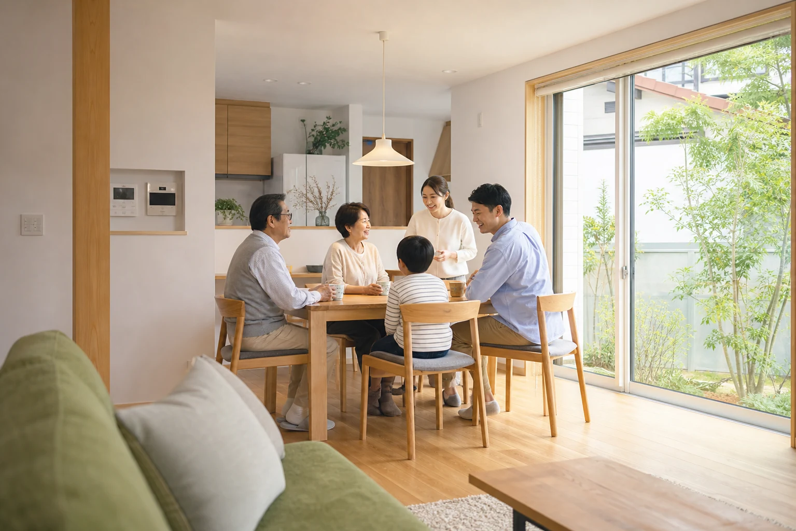
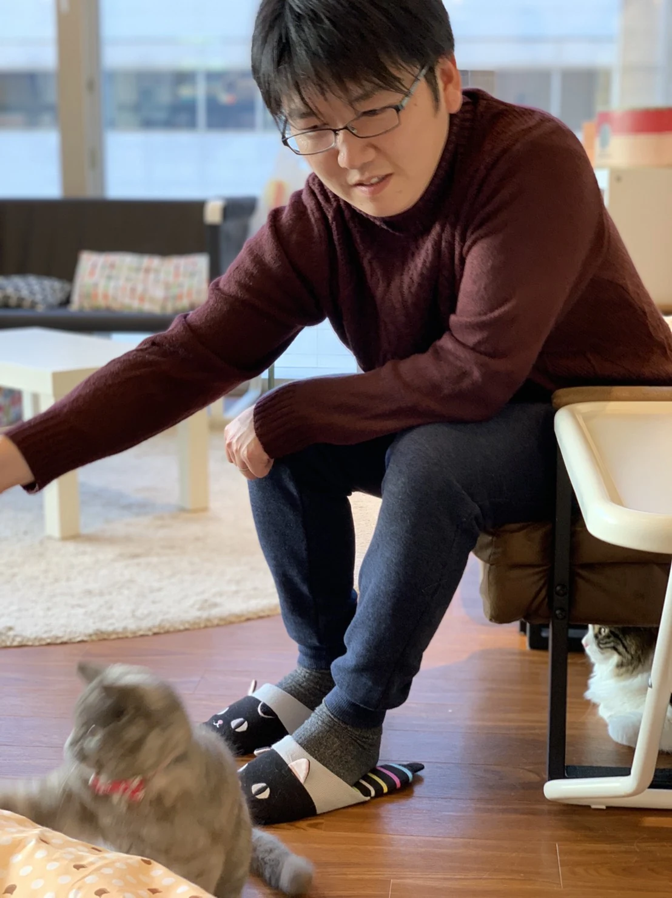

まだ決まっていない段階から
結論を急がず、いま困っていることと、ご家族の希望からお話を伺います。
群馬県の建物相談・ホームインスペクション
この家をどうするか迷ったときの建物相談。中古住宅や新築住宅の状態を確かめるホームインスペクション。
何を頼めばよいか決まっていなくても大丈夫です。いま気になっていることからお聞かせください。


建物相談｜相談無料
住み続ける、直す、貸す、売る、解体する。それぞれの方法を急いで決めず、建物の状態やご家族の希望を伺いながら、選択肢を一緒に整理します。
建物相談は無料ですメール・電話で、分かる範囲からお聞かせください。
建物相談の詳細を見る今ある家のこれから

ホームインスペクション｜有料
中古住宅を買う前、新築住宅の引渡し前、売却やリフォームの前に、建物の状態を確認します。調査結果は写真付きの報告書にまとめます。
ホームインスペクションは有料です調査内容と料金は、調査を始める前にお伝えします。
調査内容・料金の詳細を見るすみかみらいの特徴
結論を急がず、いま困っていることと、ご家族の希望からお話を伺います。
調査を担当した一級建築士が、分かったことと見られなかった場所を分けてご説明します。
住む、直す、貸す、売る、解体する。それぞれを比べてから次へ進みます。

代表プロフィール
群馬県で育ち、榛東村を拠点に活動しています。
不動産・建築の仕事に携わって約19年。現地調査、図面や写真による記録、見積書・報告書の作成、住宅改修など、住まいに関わる実務を経験してきました。
地元・群馬の身近な相談相手として、建物だけでなく土地や費用、ご家族の考えも伺いながら、これからの選択肢を一緒に整理します。
一級建築士 ／ 宅地建物取引士 ／ 2級ファイナンシャル・プランニング技能士
代表・事務所について詳しく見る